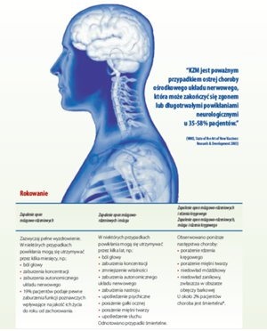

Profilaktyka
Sprawdź jak się chronić przed Kleszczowym Zapaleniem Mózgu i innymi chorobami odkleszczowymi.
Jak się zabezpieczyćKleszczowe Zapalenie Mózgu
Kleszczowe Zapalenie Mózgu może mieć różny przebieg, od łagodnego – chory przechodzi jedynie pierwszy etap choroby – do ciężkiego z objawami ze strony OUN i długotrwałymi skutkami neurologicznymi.
Obraz kliniczny KZM zależy od zjadliwości wirusa oraz indywidualnej odporności pacjenta.
Etapy choroby
Okres inkubacji:
W większości przypadków przed wystąpieniem dolegliwości wynosi on od 7 do 14 dni, ale może trwać od 2 do 28 dni.
Pierwszy etap:
Pierwszy etap trwa średnio od 2 do 4 dni (rzadko obserwowano okresy trwające od 1 do 8 dni) i odpowiada fazie wiremii (krążenia wirusa we krwi). Jest związany z występowaniem niespecyficznych objawów grypopodobnych oraz wzrostem temperatury ciała do 38°C u większości osób.
Objawy grypopodobne w trakcie pierwszego etapu KZM:
- gorączka > 38,0°C
- zmęczenie
- ból głowy
- ból pleców i kończyn
- objawy zakażenia górnych dróg oddechowych
- objawy żołądkowo-jelitowe
- utrata łaknienia
- nudności
Okres bezobjawowy:
Po pierwszym etapie następuje okres bezobjawowy trwający około 8 dni (obserwowano czas trwania od 1 do 20 dni). W tym okresie pacjenci nie mają zazwyczaj żadnych objawów.
Drugi etap:
W około 2 do 4 tygodni po zakażeniu jedna trzecia pacjentów rozwija drugą fazę choroby charakteryzującą się zajęciem OUN. Obraz kliniczny to zapalenie opon mózgowo-rdzeniowych, zapalenie mózgu, zapalenie opon mózgowo-rdzeniowych, mózgu i rdzenia kręgowego lub zapalenie opon mózgowo-rdzeniowych i korzeni nerwowych.
Wskaźnik śmiertelności u dorosłych pacjentów w Europie wynosi około 1% i wzrasta do 3% u chorych z ciężkim przebiegiem KZM obejmującym zapalenie opon mózgowo-rdzeniowych i mózgu, zapalenie opon mózgowo-rdzeniowych i rdzenia kręgowego oraz dysfunkcję autonomicznego układu nerwowego.
Głównymi objawami zapalenia opon mózgowo-rdzeniowych są silne bóle głowy, nudności i odruchy wymiotne, sztywność karku oraz wysoka gorączka. Należy zwrócić szczególną uwagę na brak objawów oponowych u około 10% pacjentów z rozpoznaniem KZM. Brak objawów oponowych w przebiegu KZM nie wyklucza poważnych neurologicznych powikłań.
{kind=link}
Zapalenie mózgu charakteryzuje się zaburzeniami świadomości, począwszy od senności do głębokiego snu, a w rzadkich przypadkach śpiączki. Inne objawy obejmują niepokój, hiperkinezę mięśni kończyn i twarzy, drżenie języka, drgawki, zawroty głowy oraz zaburzenia mowy.
W przypadku zajęcia nerwów czaszkowych objawy dotyczą mięśni oka, twarzy oraz gardła.
W niektórych przypadkach przeważają objawy neuropsychiatryczne, a pacjent jest wysyłany do oddziału psychiatrycznego. Największe nasilenie nieprawidłowości ze strony układu nerwowego jest obserwowane w przypadku zapalenia opon mózgowo-rdzeniowych, mózgu i rdzenia kręgowego początkowo charakteryzującego się wiotkim porażeniem kończyn. W związku z tym, że wirus KZM ma szczególne powinowactwo do komórek rogów przednich rdzenia kręgowego, porażenie dotyczy zazwyczaj kończyn górnych, obręczy barkowej oraz mięśni unoszących głowę.
Rozpoznanie KZM opiera się na następujących zasadach:
- informacja epidemiologiczna: pobyt na obszarze zagrożonym zakażeniem KZM, dodatkowe informacje dotyczące ukąszenia przez kleszcza
- dane kliniczne: niecharakterystyczne i zazwyczaj niewystarczające do postawienia rozpoznania
- wykazanie obecności przeciwciał przeciwko KZM w klasie IgM i IgG w surowicy (właściwy dowód zakażenia) oraz w PMR (płynie mózgowo-rdzeniowym).
Leczenie przyczynowe KZM jak do tej pory nie istnieje. W związku z tym, iż nie ma specyficznego leczenia zakażenia tym wirusem wymagane jest leczenie objawowe.
Hospitalizacja zazwyczaj jest wymagana przez okres 3 tygodni, chociaż w ciężkich przypadkach może potrwać nawet kilka lat. Wraz ze wzrostem wieku pacjenta, zwłaszcza u ludzi po 60 roku życia, istnieje większe prawdopodobieństwo, iż KZM będzie miało ciężki przebieg, prowadząc do niedowładów a nawet do śmierci.
Zobacz historie jak KZM zmieniło życie pacjentów i ich rodzin w zakładce "Historie pacjentów"